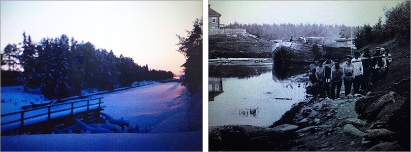
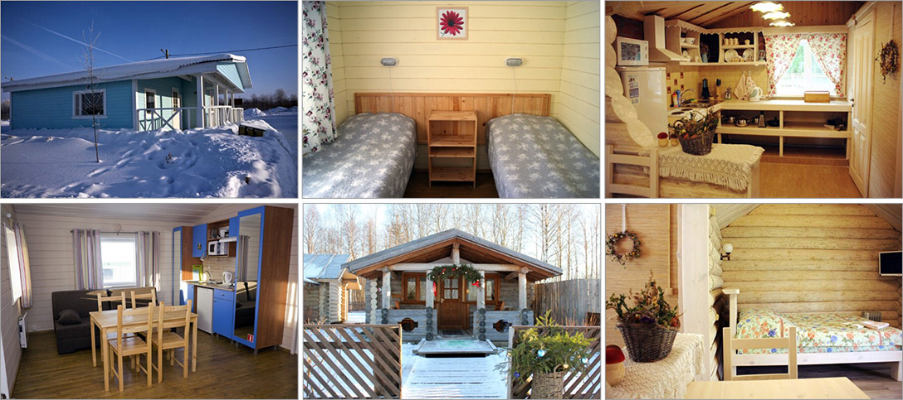

Есть в России малоизведанные места, где в стародавние времена была очень насыщенная жизнь. Наши предки волокли торговые и военные суда с юга на север и обратно, затем прокладывали каналы, соединившие водоразделы северных и южных рек, создавая путь из «варяг в греки» - от Волги до северных морей и Балтики. Не случайно возникали здесь крупнейшие монастыри Руси.
Сегодня наш лыжный поход пройдет по Северо-Двинскому каналу (называемому также каналом герцога Виртембергского) - части Мариинской водной системы. Канал был построен в рекордные сроки в 1825-1828 годах. Мы посетим удивительные по красоте места, познакомимся с шедеврами русской архитектуры и просто приятно проведем время в комфортных домиках.
Маршрут рассчитан на физически активных людей, но предусмотрено частичное прохождение с доставкой микроавтобусом
Маршрут начинается в Вологде (утром), где вас будут ожидать гиды, и будет организован трансфер до парк-отеля "Лайтури". Размещаемся, обедаем, примеряем лыжное снаряжение и пройдем по Никольскому озеру до Вознесенской церкви у истока реки Славянки. Сегодня пробный маршрут 15 км. Вечером - сауна в домиках.
Лыжный переход до Ферапонтова монастыря (28 км) - жемчужины Русского Севера.
Комплекс памятников Ферапонтова монастыря с сохранившимися фресками Дионисия является редким образцом русского северного монастырского ансамбля XV – XVII веков, здания которого, единственные на Русском Севере, сохранили все характерные особенности декора и интерьеров. Ансамбль Ферапонтова монастыря – удивительный пример гармоничного единения с практически не изменившимся с XVII века естественным окружающим ландшафтом.
По пути посещаем Музей Русской гармошки.
После экскурсий возвращаемся на автобусе, посещаем сауну и готовимся к встрече Рождества.
Вечером праздничный ужин в ресторане парк-отеля.
После завтрака грузим вещи в автобус и движемся налегке по Северодвинской водной системе до озера Сиверского, на берегу которого находится знаменитый Кирилло-Белозерский монастырь (30 км). По пути осмотрим старые шлюзы, Покровскую церковь на озере Покровское, насладимся красотами севера.
Ночуем мы сегодня в экологической деревеньке "Экотель" прямо на берегу Сиверского озера в симпатичных бревенчатых домиках со всеми удобствами. Желающие могут покататься на санках и ватрушках с горки, на коньках на озере или пострелять в тире. Вечером для желающих баня.
Сегодня наш путь лежит по озеру Сиверское, мимо Кирилло-Белозерского монастыря до Воскресенского Горицкого женского монастыря. По дороге поднимемся на знаменитое место силы - гору Маура, откуда старцу Кириллу открылся вид на место строительства будущего Кирилло-Белозерского монастыря. Там до сих пор сохранился камень с отпечатком ступни старца. Ставим ногу и загадываем желание:). Далее через место стоянки древних людей спускаемся к Горицкому монастырю, основанному в XVI веке родственницей Ивана Грозного.
В этот монастырь Иван Грозный ссылал своих жен: царицу Анну Алексеевну (четвертая супруга), царицу Марию (последняя жена Ивана Грозного). Там же жила и царевна Ксения - дочь Бориса Годунова. Эти женщины заложили основы бисероплетения в этих краях. Матушка Ариадна проведет экскурсию по монастырю.
Возвращаемся в "Экотель". Общий километраж сегодня 24 км. Для желающих - баня.
Сегодня завтракаем, собираем вещи в автобус и направляемся в Кирилло-Белозерский монастырь, для осмотра которого нужно запланировать 3 - 5 часов. Стены крупнейшего в России монастыря протянулись более, чем на километр, 11 храмов представляют прекрасный архитектурный ансамбль, заложенный ростовскими зодчими. Почти 400 лет он был крупнейшим духовным центром Руси. Именно в этом монастыре видел идеалы благочестия Иван Грозный - "спасительное пристанище для душ, последнее светило, сияющее как солнце."
Отъезд из Вологды лучше планировать на вечер.
NB. Тур проводится впервые, поэтому возможны изменения в маршруте из-за состояния снежного покрова.